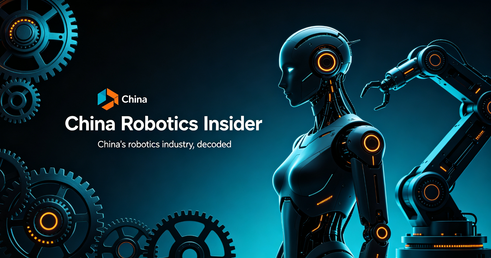

KUKA
Germany's iconic robot maker is now a 100%-owned subsidiary of China's Midea Group — delisted since November 2022, building robots in Shunde, and ranked No.2 in China's industrial-robot market in H1 2026 with a 9.7% share.

Company Overview
- KUKA is one of the world's best-known industrial-robot and automation-system brands, headquartered in Augsburg, Germany, with a deep heritage in automotive line automation.
- In 2016-2017 China's Midea Group (美的集团) took a controlling stake (~94.55% via a EUR 3.7B offer); on May 17, 2022 the AGM passed a squeeze-out of minority shareholders, which became effective in November 2022 at EUR 80.77 per share — KUKA was delisted and became 100%-owned (indirectly) by Midea.
- KUKA now reports inside Midea's Robotics & Automation segment rather than as a standalone listed company; Midea chairman Fang Hongbo said KUKA's 2023 revenue and profit both hit record highs under private ownership.
- China strategy: industrial robots are manufactured at the Shunde (顺德, Foshan) base; new models including SCARA and DELTA robots are developed in China; the China segment also spans systems engineering, Swisslog warehouse automation and healthcare automation.
Why KUKA matters to China
- KUKA is the highest-profile case of a European robot icon becoming a Chinese-owned subsidiary — the ownership answer to Chinese brands (Estun, Inovance) buying European assets like Cloos.
- Its Chinese factory gives it "local brand" economics (price, supply chain, delivery) on top of German engineering credibility, letting it hold share as domestic brands crossed 55% of China's market.
- KUKA's strength is heavy-load: >50% of China's 300kg+ payload robot market, deployed in automotive components, energy-storage battery, shipbuilding and aerospace — the high-value niches Chinese rivals have not yet won.
2026 snapshot (company & MIR Ruigong data)
| Metric | Figure | Period / note |
|---|---|---|
| Ownership | 100% Midea Group (indirect) | Squeeze-out effective Nov 2022; delisted |
| KUKA Group revenue growth | +10%+ YoY | H1 2026 |
| China share of KUKA revenue | 30%+ | H1 2026; China revenue first exceeded EUR 1B in 2025 |
| China robot shipments | 18,000+ units, +19% YoY | H1 2026, per MIR Ruigong (睿工业) |
| China domestic share | 9.7% — No.2 | H1 2026 industrial-robot market |
| Heavy-load (300kg+) share | >50% | China; auto parts, energy storage, shipbuilding, aerospace |
| Midea Robotics & Automation revenue | RMB 16.62B (+10.27%) | H1 2026 |
Shipments and share figures per MIR Ruigong as reported by Midea's investor communications (Oct 2026). Group and segment revenue are company disclosures.
What to watch
KUKA Group CEO Christoph Schell calls China "by far the largest robotics market in the world" and frames the decade ahead as one of profound technological transformation; in March 2026 KUKA unveiled its "Automation 2.0" vision as physical AI reshapes manufacturing — keeping Automation 1.0 as the backbone while adding AI-enabled automation layers. Watch how much of that physical-AI agenda KUKA develops in China (where its robots are already made) versus globally, and whether the No.2 share position holds as Estun, Inovance and newcomer humanoid makers scale.
Related
- China Robot Arms vs ABB & KUKA: the 55% crossing — full market comparison.
- China's Industrial Robot Industry — domestic-brand share and pricing dynamics.
- ESTUN profile and Inovance profile — the Chinese champions now ahead of KUKA by volume.
Frequently asked questions
Is KUKA a subsidiary of Midea?
Yes. Midea took a controlling stake in 2016-2017, then completed a 100% squeeze-out in November 2022 (minority shareholders cashed out at EUR 80.77/share); KUKA was delisted and is now a fully owned (indirect) subsidiary of Midea Group.
How is KUKA doing in China?
H1 2026: group revenue +10%+ YoY with China contributing 30%+; 18,000+ robots shipped in China (+19%), a 9.7% domestic share (No.2), and over 50% of the 300kg+ heavy-load segment (MIR Ruigong data). China revenue first exceeded EUR 1B in 2025.
Is KUKA still listed?
No — delisted after the November 2022 squeeze-out. It reports within Midea's Robotics & Automation segment (H1 2026 revenue RMB 16.62B, +10.27%).
Where does KUKA make robots in China?
At the Shunde (Foshan) base; SCARA and DELTA models are developed in China, alongside systems engineering, Swisslog warehouse automation and healthcare automation.
Sources: China News (2022 squeeze-out completion); KUKA press (squeeze-out effective Nov 2022); Midea investor communications via 10jqka (Oct 8, 2026); KUKA CEO interview (iimagazine, Apr 2026); KUKA "Automation 2.0" release (Mar 2026); Sina Finance / 新浪科技 (Sep-Oct 2026); China Economic Net (Apr 2025). Company figures are as disclosed; market-share data per MIR Ruigong.